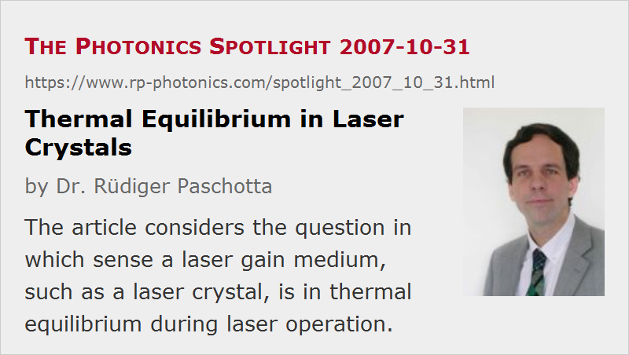

Thermal Equilibrium in Laser Crystals
Posted on 2007-10-31 as a part of the Photonics Spotlight (available as e-mail newsletter!)
Permanent link: https://www.rp-photonics.com/spotlight_2007_10_31.html
Author: Dr. Rüdiger Paschotta, RP Photonics Consulting GmbH
Abstract: The article considers the question in which sense a laser gain medium, such as a laser crystal, is in thermal equilibrium during laser operation.

It is instructive to think about the question whether or not – or better in which sense – a gain medium of a laser, such as a laser crystal, is in thermal equilibrium during laser operation.
Temperature Distribution
The simplest aspect is that of the temperature distribution within the crystal material. Quite obviously, we cannot have thermal equilibrium in this respect, which would mean the same temperature everywhere. That condition would imply zero heat flow, while there is certainly some heat generated in the laser process, and this heat must flow somewhere. Unfortunately, the inevitable temperature gradients give rise to detrimental phenomena such as thermal lensing.
Electronic States
We can also consider the electronic states, first looking only at populations of different Stark level manifolds. In Nd:YAG, for example, we usually have appreciable population densities only in two different states: the metastable upper laser level (4F3/2) and the ground state (4I9/2). In thermal equilibrium, the population of the upper laser level is always smaller than that of the ground state – a population inversion as required for a positive laser gain does not occur, even at very high temperatures. So during laser operation we need to have a non-equilibrium state here. Formally, this can be described as a negative temperature inserted into a Boltzmann distribution, but that doesn't cure the problem that a Boltzmann distribution actually applies only in thermal equilibrium, which we don't have here.
By the way, it is not that the population of the upper laser level would approach 50% at high temperatures (and without optical fields around). Why not? Because both involved Stark level manifolds actually consist of multiple Stark levels, and the ground state manifold (4I9/2) has more of those.
Despite all what has been said above, you can find plenty of Boltzmann factors in the literature on laser models. These then usually apply to the distribution of population over the different Stark levels within the same Stark level manifold. Interestingly, we can easily have a thermal equilibrium within each Stark level manifold, even if there is definitely no thermal equilibrium between those manifolds. This is because phonons (lattice vibrations) induce very rapid transitions between those Stark levels within one manifold, enforcing the equilibrium within picoseconds, while transitions between different level manifolds require much longer time scales. These longer time scales also depend very much on the conditions: they are not that long if the energy difference between two adjacent manifolds is at most a few phonon energies, so that rapid multi-phonon transitions can take place. Otherwise, they can be larger by orders of magnitude.
A Special Case
There are some very special cases, where such a thermal equilibrium between closely spaced Stark level manifolds is not established in time. Consider the amplification of an ultrashort pulse in a laser crystal, with the pulse energy being of the order of the saturation energy or larger. The process of stimulated emission will very rapidly transfer laser-active ions from the upper-state manifold to the manifold of the lower laser level. Multi-phonon processes may not be fast enough to remove the ions from the lower laser level before reabsorption can take place. The result of this is that the saturation of the laser gain is stronger than normal for some short time, and after that the gain partially recovers on a time scale of e.g. a few nanoseconds, depending on the rate of multi-phonon emission. That later gain recovery doesn't help, as the amplified pulse is gone by then. Therefore, the performance e.g. of some regenerative amplifiers is somewhat worse than expected without having that saturation effect in mind. The problem does not occur in continuous-wave operation of the laser crystal, or for smaller pulse energies, or for much longer pulses.
This article is a posting of the Photonics Spotlight, authored by Dr. Rüdiger Paschotta. You may link to this page and cite it, because its location is permanent. See also the RP Photonics Encyclopedia.
Note that you can also receive the articles in the form of a newsletter or with an RSS feed.
Questions and Comments from Users
Here you can submit questions and comments. As far as they get accepted by the author, they will appear above this paragraph together with the author’s answer. The author will decide on acceptance based on certain criteria. Essentially, the issue must be of sufficiently broad interest.
Please do not enter personal data here; we would otherwise delete it soon. (See also our privacy declaration.) If you wish to receive personal feedback or consultancy from the author, please contact him e.g. via e-mail.
By submitting the information, you give your consent to the potential publication of your inputs on our website according to our rules. (If you later retract your consent, we will delete those inputs.) As your inputs are first reviewed by the author, they may be published with some delay.
|  |
If you like this page, please share the link with your friends and colleagues, e.g. via social media:
These sharing buttons are implemented in a privacy-friendly way!